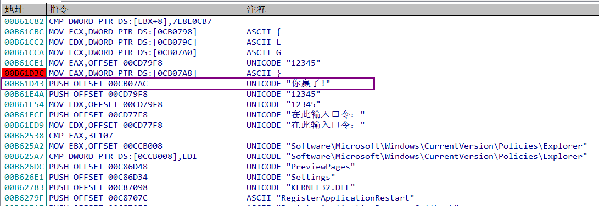
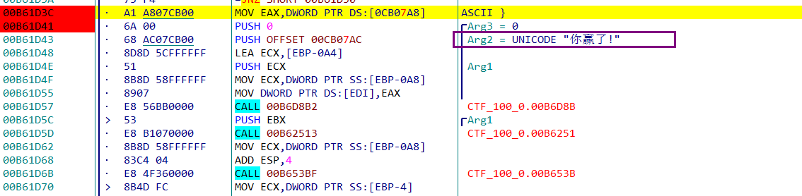
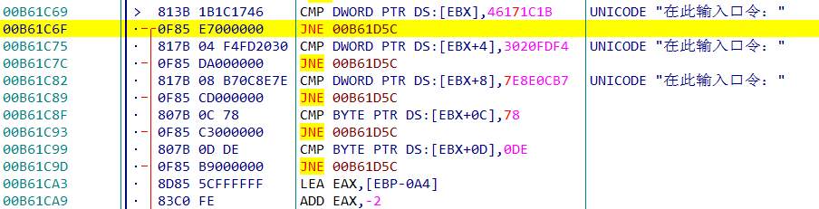
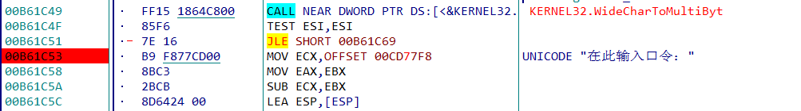
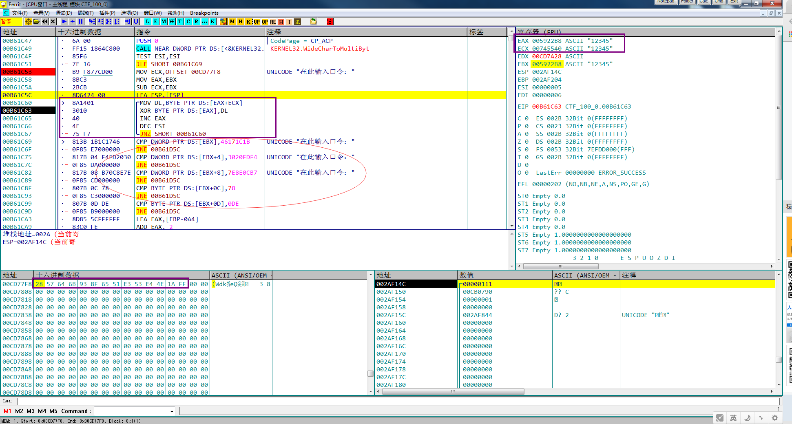

下载文件
下载文件后解压，得到一个可执行文件，用PEiD分析，发现软件没有加壳，而且是32位的可执行文件。
用Ollydbg分析
将文件在od中打开，查看引用的所有字符串：

发现了图中”你赢了”字样的字符串，猜想判断语句应该在其附近。转到该位置:

在其周围发现一系列的判断和跳转语句，猜想应该与字符串判断相关:

在上面”输入口令”字样处下断点:

动态调试运行
下断点后进行动态调试运行，发现程序在输入字符串后确实停留在断点位置，step over：
根据调试信息和汇编语句可以判断出程序的执行逻辑:

图中红色大方框中是循环判断字符串的汇编代码，其逻辑是:
- 取EAX与ECX相加后得到地址中的值赋予DL
- 将DL与EAX地址中的字符串亦或(EAX中的字符串就是输入的字符串)
EAX与ECX的地址相加为0x00CD77F8，其中具体值如红色长方框中所示。
在异或完成后将结果与46171C1B, 3020FDF4, 7E8E0CB7, 78, DE进行比较，只有值全部相等时才认为正确。编写程序解码
注意最后比较的数字中有高低位的区别1
2
3
4
5
6s1 = [0x28, 0x57, 0x64, 0x6B, 0x93, 0x8F, 0x65, 0x51, 0xE3, 0x53, 0xE4, 0x4E, 0x1A, 0xFF]
s2 = [0x1B, 0x1C, 0x17, 0x46, 0xF4, 0xFD, 0x20, 0x30, 0xB7, 0x0C, 0x8E, 0x7E, 0x78, 0xDE]
flag = ''
for i in range(len(s1)):
flag = flag + chr(s2[i] ^ s1[i])
print flag
运行后得到的flag为：
3Ks-grEaT_j0b!